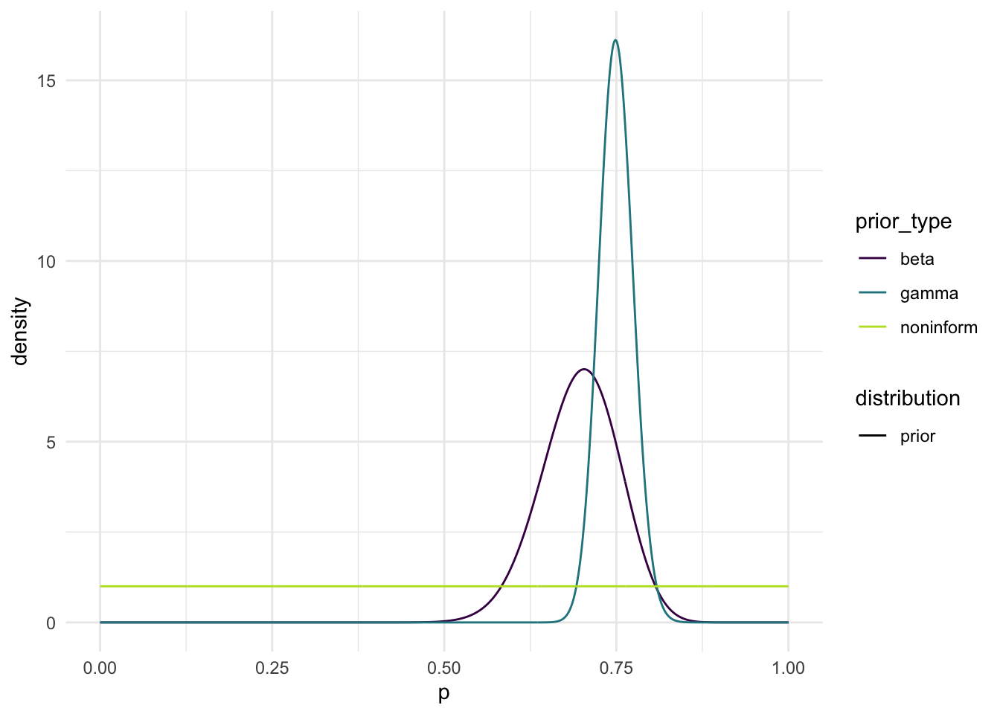
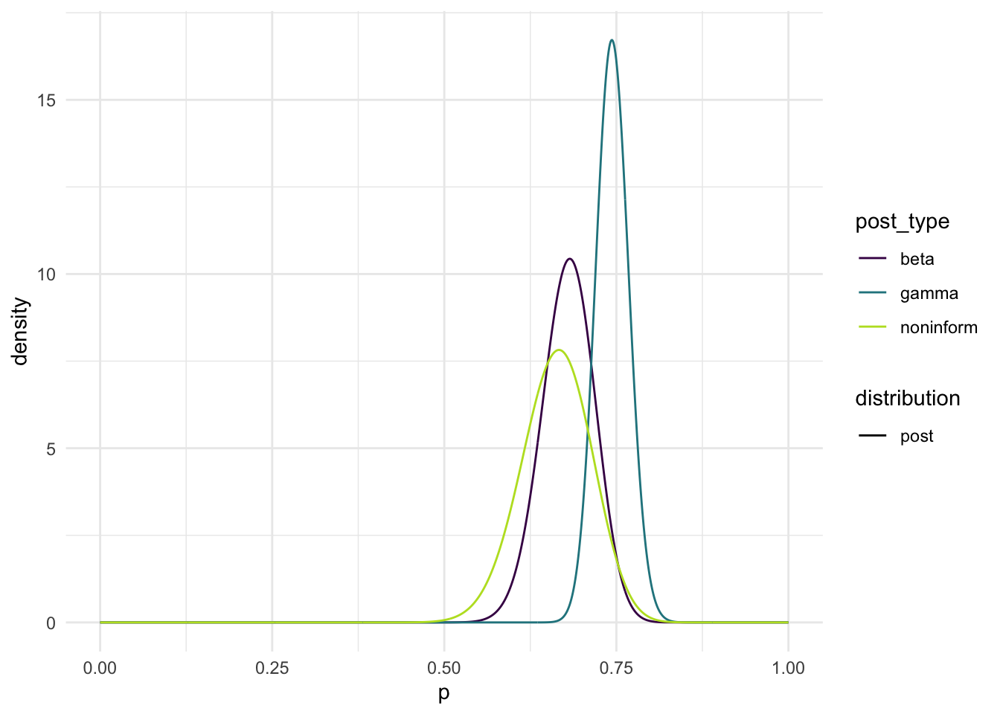
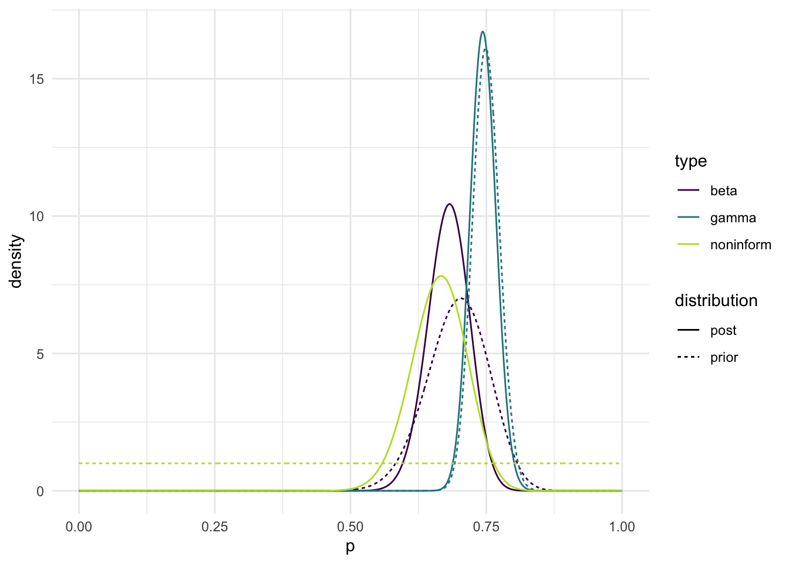
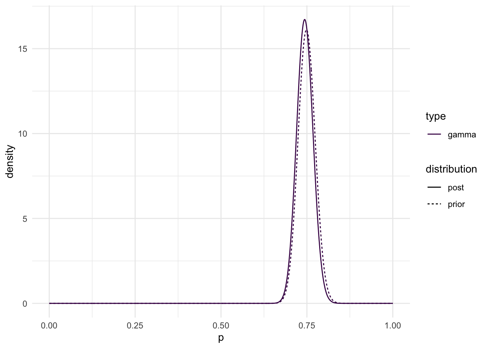
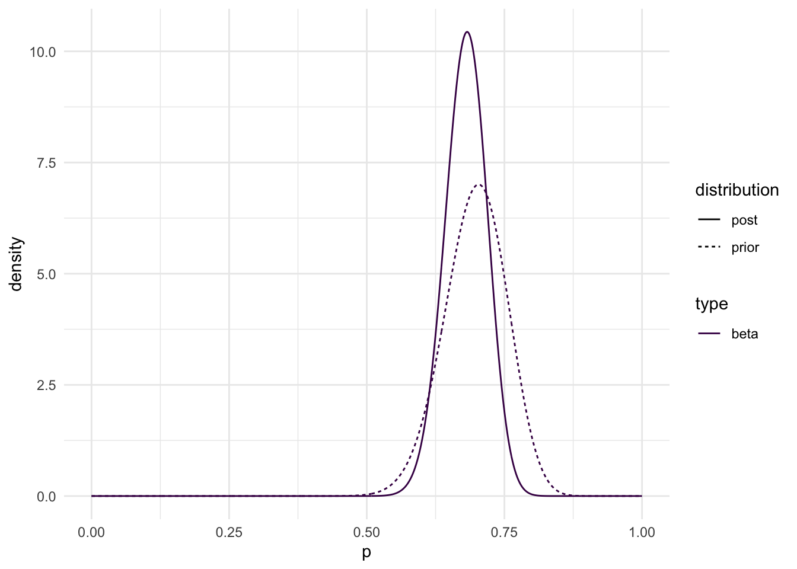
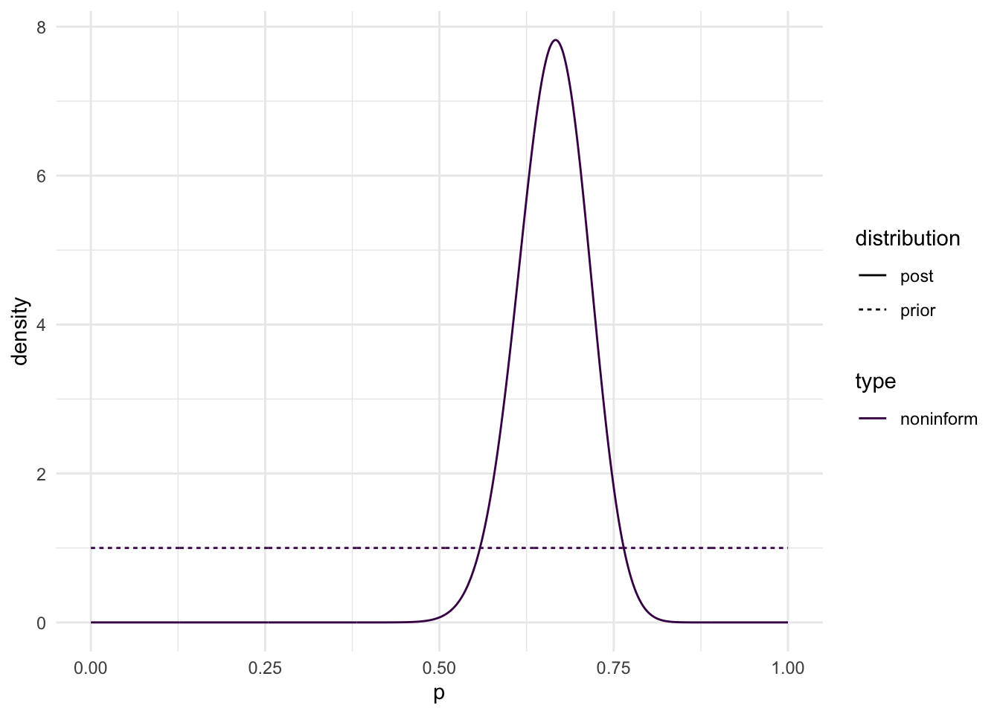

library(mosaic)
library(tidyverse)
library(ggplot2)In this project, we will be looking at how informed vs non-informed Bayesian distributions can predict the proportion of Tennis legend Rafa Nada, points won off of his own serves. We will look into two informed models and one informed model, and pick which model we would use to predict this proportion.
First lets start with the prior that Dr. Higham has provided a nice code template for a gamma distribution
## Informed Gamma
## trying to get a prb of 0.75 and a probability
## that lambda is less than 0.7 equal to 0.02
## informative prior for 0.75 wins and certain of no less than 0.7
alphas <- seq(0.01, 10000, length.out = 200000)
ks <- alphas / 0.75
target_prob <- 0.02
prob_less_0.7 <- pgamma(0.7, alphas, ks)
tibble(alphas, ks, prob_less_0.7) |>
mutate(close_to_target = abs(prob_less_0.7 - target_prob)) |>
filter(close_to_target == min(close_to_target))# A tibble: 1 × 4
alphas ks prob_less_0.7 close_to_target
<dbl> <dbl> <dbl> <dbl>
1 916. 1222. 0.0200 0.000000451## we see that an alpha of 916 and k = 1222 gets us closest to this targetNow lets try another informative prior. I’m going to try a beta distribution since the data is binomial, either Nadal wins the point on his own serve, or he does not, and the events are independant (assuming), and lastly we are dealing with proportions and beta uses quantities between 0 and 1! This gives us a nice beta distribution and will be a lovely conjugate prior!
## Informed Beta
## Trying to simulate to find best prior alpha and beta
target_prb_b <- 46/66
alphas_b <- seq(0.1, 1000, length.out = 50000)
betas_b <- ((1 - 46/66) * alphas_b) / (46/66)
param_df <- tibble(alphas_b, betas_b)
param_df <- param_df |> mutate(vars = (alphas_b * betas_b) / ((alphas_b + betas_b)^2 * (alphas_b + betas_b + 1)))
target_var_b <- 0.05657^2
param_df <- param_df |> mutate(dist_to_target = abs(vars - target_var_b))
param_df# A tibble: 50,000 × 4
alphas_b betas_b vars dist_to_target
<dbl> <dbl> <dbl> <dbl>
1 0.1 0.0435 0.185 0.182
2 0.120 0.0522 0.180 0.177
3 0.140 0.0609 0.176 0.173
4 0.160 0.0696 0.172 0.169
5 0.180 0.0783 0.168 0.165
6 0.200 0.0870 0.164 0.161
7 0.220 0.0956 0.161 0.157
8 0.240 0.104 0.157 0.154
9 0.260 0.113 0.154 0.151
10 0.280 0.122 0.151 0.147
# ℹ 49,990 more rowsparam_df |> filter(dist_to_target == min(dist_to_target))# A tibble: 1 × 4
alphas_b betas_b vars dist_to_target
<dbl> <dbl> <dbl> <dbl>
1 45.3 19.7 0.00320 0.000000342## We find that the informed beta prior is beta(45.3, 19.7)Time for an uniformed prior: A reasonable uniformed would be a uniform 0 to 1, or in otherwords a beta(1,1)!
Now that we have the three priors, lets plot them!
ps <- seq(0, 1, length.out = 1000)
gamma_prior = dgamma(ps, 916, 1222)
beta_prior = dbeta(ps, 45.3, 19.7)
noninform_prior = dbeta(ps, 1, 1)
plot_prior_df <- tibble(ps, gamma_prior, beta_prior, noninform_prior) |>
pivot_longer(2:4, names_to = "distribution", values_to = "density") |>
separate(distribution, into = c("prior_type", "distribution"))
ggplot(data = plot_prior_df, aes(x = ps, y = density, colour = prior_type,
linetype = distribution)) +
geom_line() +
scale_colour_viridis_d(end = 0.9) +
theme_minimal() +
labs(x = "p")
Now, lets update these priors with the data from the 2020 French Open!
Updating our gamma informative prior:
## updating the gamma:
## updating alpha is the sum of yi + old alpha
## updating k is old k + n
## Nadal won 56 of 84. so new alpha = 56 + 916 and new k = 1222 + 84
## Informative post is gamma(972, 1306)
gamma_post = dgamma(ps, 972, 1306)Updating our informative beta:
## to update a beta distribution, new alpha = yobs + old alpha
## new beta = n - yobs + old beta
## informed posterior is now Beta(101.3, 47.7
beta_post = dbeta(ps, 101.3, 47.7)Updating our non-informative prior:
## Even though it looks like our distribution is a uniform(0, 1), it is actually a beta(1, 1), this allows us to work with a conjugate prior. So we go through the same steps as our informative beta proir to get the posterior.
## new alpha = 56 + 1 = 57
## new beta = 84 - 56 + 1 = 29
## uninformed posterior is now a beta(57, 29)
noninform_post = dbeta(ps, 57, 29)Now lets plot these:
ps <- seq(0, 1, length.out = 1000)
gamma_post = dgamma(ps, 972, 1306)
beta_post = dbeta(ps, 101.3, 47.7)
noninform_post = dbeta(ps, 57, 29)
plot_post_df <- tibble(ps, gamma_post, beta_post, noninform_post) |>
pivot_longer(2:4, names_to = "distribution", values_to = "density") |>
separate(distribution, into = c("post_type", "distribution"))
ggplot(data = plot_post_df, aes(x = ps, y = density, colour = post_type,
linetype = distribution)) +
geom_line() +
scale_colour_viridis_d(end = 0.9) +
theme_minimal() +
labs(x = "p")
You can’t really do much with this without seeing how they overlay with their respective priors, so lets do that.
ps <- seq(0, 1, length.out = 1000)
gamma_prior = dgamma(ps, 916, 1222)
beta_prior = dbeta(ps, 45.3, 19.7)
noninform_prior = dbeta(ps, 1, 1)
gamma_post = dgamma(ps, 972, 1306)
beta_post = dbeta(ps, 101.3, 47.7)
noninform_post = dbeta(ps, 57, 29)
plot_df <- tibble(ps, gamma_post, beta_post, noninform_post,
gamma_prior, beta_prior, noninform_prior) |>
pivot_longer(2:7, names_to = "distribution", values_to = "density") |>
separate(distribution, into = c("type", "distribution"))
ggplot(data = plot_df, aes(x = ps, y = density, colour = type,
linetype = distribution)) +
geom_line() +
scale_colour_viridis_d(end = 0.9) +
theme_minimal() +
labs(x = "p")
Now lets look at each individually:
## informative gamma
ps <- seq(0, 1, length.out = 1000)
gamma_prior = dgamma(ps, 916, 1222)
gamma_post = dgamma(ps, 972, 1306)
gamma_df <- tibble(ps, gamma_post, gamma_prior) |>
pivot_longer(2:3, names_to = "distribution", values_to = "density") |>
separate(distribution, into = c("type", "distribution"))
ggplot(data = gamma_df, aes(x = ps, y = density, colour = type,
linetype = distribution)) +
geom_line() +
scale_colour_viridis_d(end = 0.9) +
theme_minimal() +
labs(x = "p")
## informative beta
ps <- seq(0, 1, length.out = 1000)
beta_prior = dbeta(ps, 45.3, 19.7)
beta_post = dbeta(ps, 101.3, 47.7)
beta_df <- tibble(ps, beta_post, beta_prior) |>
pivot_longer(2:3, names_to = "distribution", values_to = "density") |>
separate(distribution, into = c("type", "distribution"))
ggplot(data = beta_df, aes(x = ps, y = density, colour = type,
linetype = distribution)) +
geom_line() +
scale_colour_viridis_d(end = 0.9) +
theme_minimal() +
labs(x = "p")
## non-informative beta
ps <- seq(0, 1, length.out = 1000)
noninform_prior = dbeta(ps, 1, 1)
noninform_post = dbeta(ps, 57, 29)
non_df <- tibble(ps, noninform_post, noninform_prior) |>
pivot_longer(2:3, names_to = "distribution", values_to = "density") |>
separate(distribution, into = c("type", "distribution"))
ggplot(data = non_df, aes(x = ps, y = density, colour = type,
linetype = distribution)) +
geom_line() +
scale_colour_viridis_d(end = 0.9) +
theme_minimal() +
labs(x = "p")
Before we do any comparisons, it should be not that in all cases, we see a post with a more precise distribution than the prior, meaning our posterior is gethering new information and honing it to a tighter range, which is what we hope to see happens with new information added!
Now, lets look into posterior means:
mean_gamma = 972 / 1306
mean_beta = 101.3 / (101.3 + 47.7)
mean_non = 57 / (57 + 29)the mean of our informative gamma distribution is 0.7442573, the mean of our informative beta distribution is 0.6798658, and the mean of our non-informative beta posterior is 0.6627907.
Something to note is that the mean of our informative posterior beta and our non-informative posterior beta are very similar. Lets see a 90% credible interval for each.
## Gamma Informative
g_lb = qgamma(0.05, 972, 1306)
g_ub = qgamma(0.95, 972, 1306)
## Our model shows that there is a 90% probability that the proportion of points won by Nadal off of his own serves is between 0.7054313 and 0.7839538
## Beta informative
b_lb = qbeta(0.05, 101.3, 47.7)
b_ub = qbeta(0.95, 101.3, 47.7)
## Our model shows that there is a 90% probability that the proportion of points won by Nadal off of his own serves is between 0.6158332 and 0.7411439
##Non-informative beta
n_lb = qbeta(0.05, 57, 29)
n_ub = qbeta(0.95, 57, 29)
## Our model shows that there is a 90% probability that the proportion of points won by Nadal off of his own serves is between 0.5772453 and 0.7440061Something interesting to not is that each 90% credible interval contains 0.74 within its bounds, if more data is collected, could we see each distribution start to center around 0.74?
Lets put this all into a table:
| Posterior | Posterior Mean | Variance | 90% Credible Interval Lower Bound | 90% Credible Interval Upper Bound |
|---|---|---|---|---|
| \(\text{Informative: }Gamma(972, 1306)\) | 0.7442573 | 0.0005698754 | 0.7054313 | 0.7839538 |
| \(\text{Informative: } Beta(101.3, 47.7)\) | 0.6798658 | 0.001450989 | 0.6158332 | 0.7411439 |
| \(\text{Non - Informative: } Beta(57, 29)\) | 0.6627907 | 0.2209007 | 0.5772453 | 0.7440061 |
We see that each posterior distribution is slightly different from each other. This is true for a multitude of reasons, however this is predominantly because each of these three distributions, we made different assumptions. for the informative gamma, we see that a group of statisticians used a claim that Nadal wins roughly 0.75 of his served points with being certain its no less than 0.7. Whereas our informative beta distribution uses prior knowledge of a previous match, and used a beta distribution due to the binomial nature of the data, and knowledge that we are bounded by 0 and 1. For our non-informative we simply use a uniform(0, 1) / beta(1, 1) distribution. For these reasons we see such differences between the three posteriors.
But a major similarity between the three posteriors is the fact that contained within each of the 90% Credible intervals is 0.74. This leads me to believe that as more information is added, wee will see each of the distributions settle around 0.74.
Based on this if I had to choose a distribution for this data, I’d choose the informative beta distribution. We see that 0.74 is contained in its credible interval, but we also see that it has an extremely low variance. Its variance may not be as low as our informative gamma distribution (0.0005698754), but I like the fact that this informative beta distribution is based off of hard data and not someones “gut feeling”.
On the topic of variance, we see that each posterior has a different variance, and that the informative gamma distribution has an extremely small variance. This is due to the fact that the formula to get variance for a gamma distribution is alpha/lambda^2, we started with a very high lambda (in this case (k)) to begin with (1306), this denominator is squared to get a denominator of 1705636. Wheras the denominators of our betas don’t even breach 10000. Plus the numerators for beta distribution are also high since it relies on both alpha and beta.
In this mini project, findings show that the posteriors of proportion of Nadal points served includes 0.74 throughout. We find that as data is added to a prior, the posterior will settle towards its true value. A major surprising finidng in this project is that the uniformed beta(1, 1) prior has an almost identical posterior mean to the informative beta prior’s posterior mean.